Shift-invariant interpattern association neural network
Chii-Maw Uang, Shizhuo Yin, P. Andres, Wade Reeser,
and Francis T. S. Yu
Applied Optics Vol. 33, No. 11, pp. 2147-2151, April 1994
Abstract
A shift-invariant neural network that uses the translation-invariant property of the modulus Fourier spectra with the heteroassociation interpattern association memory is proposed. A binary encoding of a spectral sampling of the training set is used to preserve the main features. Computer simulations and experimental demonstrations are provided that show the shift-invariant property of the proposed optical network.
An object function f(x, y) for which the Fourier transform is given by F(p, q) = FT{f(x, y)}, where (p, q) are the angular spatial frequency coordinates. The corresponding power-density function is
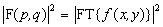
The object function is shifted by
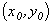
, then the Fourier transform of the shifted object function is FT{f(x-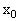
, y-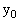
) = F(p, q)exp[ -i (p + p)]. The corresponding power-density function remains unchanged :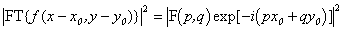
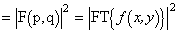
This is the shift-invariant property of the modulus of the Fourier transform.
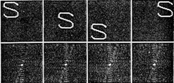
Fig. 1 Shift-invariant property of the power spectral distribution.
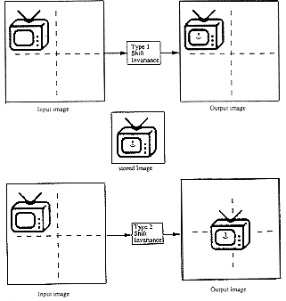
Fig. 2. Two types of shift-invariant systems.
In the first method we can select a threshold level for the binarization of the set of power spectral functions. Since the power-density spectrum is a symmetric function, the encoding process can be taken only over the half spectral domain without loss of discrimination. Since the zero-order spectral density would not provide any useful information for the recognition process, it can be removed in the encoding process.
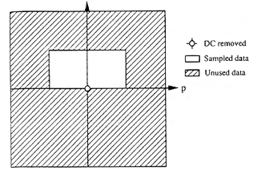
Fig. 3. Conventional binarization sampling process.
The second method is called feature sampling, which is essentially a modified sampling technique.
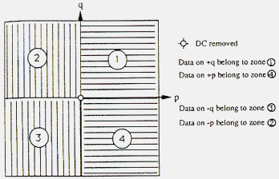
Fig. 4. Feature-sampling binarization process.
Let the EPSD(encoded power spectral density) input and output neuron pattern arrays be
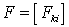
and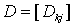
. The heteroassociative IPA interconnection weight matrix be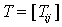
.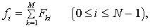
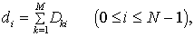
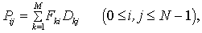
A heteroassociation IWM can be constructed as following :
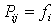
, then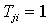
;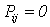
,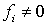
, and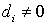
, then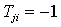
;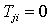
.The output neuron is represented by the well-known retrieval equation :
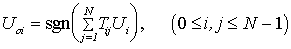
where
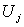
represents the state of the jth input neuron, sgn(x) represents a threshold function, and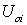
represents the state of the ith output neuron after the retrieval process.
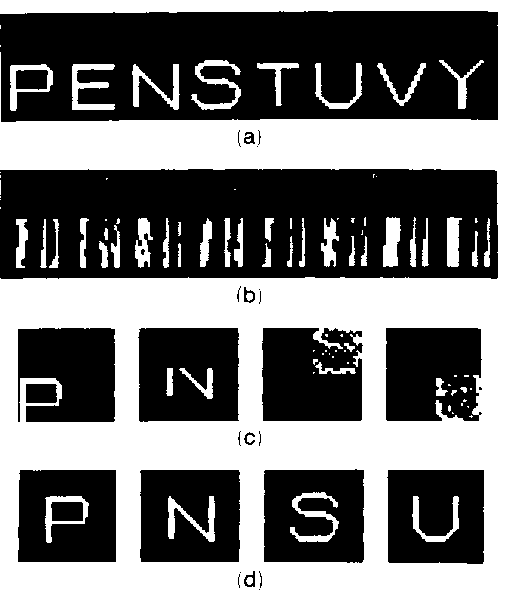
Fig. 5. Computer-simulation demonstration: (a) eight training exemplars; (b) their corresponding encoded binarized power spectral distributions; (c) test patterns; (d) their corresponding recalled results.
Created by : Lin-hung Shen
Date : May 1 1997